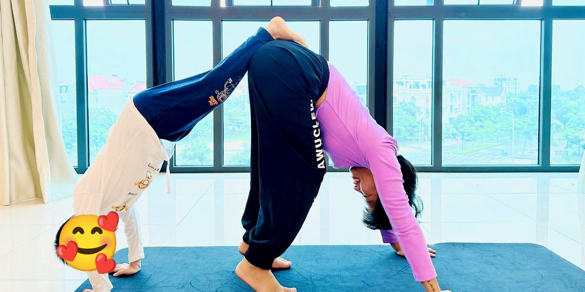

Yoga người lớn · Giới và luật · Trong gia đình
Giới và luật trong gia đình: từ bữa cơm đến ngày giỗ, ngày Tết

Gia đình người Việt ít khi chỉ có bố mẹ và con. Còn ông bà, cô dì chú bác, anh chị em, dâu, rể. Còn ngày giỗ, ngày Tết. Và một nhóm Zalo đại gia đình lúc nào cũng có tin mới.
Có người tập yoga thấy lòng yên được cả tuần. Về quê một ngày Tết là hết.
Cũng không sao. Chính những lúc ấy là lúc giới và luật có việc để làm.
Chưa rõ giới và luật là gì? Đọc bài gốc trước: Giới và luật trong yoga: 5 giới, 5 luật.
Năm giới (Yama)
1Không làm hại Ahimsa
Bữa cơm đông người, một câu hỏi vô tình cũng làm đau. “Bao giờ lấy chồng?” “Sao dạo này béo thế?” “Lương được bao nhiêu?”
Không làm hại là mình không hỏi những câu ấy. Khi bị hỏi, trả lời nhẹ nhàng, không gay gắt lại. Và không mang chuyện của nhà này đi kể ở nhà kia.
Thử tuần này: Bữa cơm gia đình tới, thay một câu hỏi soi xét bằng câu: “Dạo này có gì vui không?”
2Chân thật Satya
Chuyện tiền nong. Chuyện đất đai. Chuyện ai chăm bố mẹ. Không nói rõ thì thành chuyện.
Chân thật là nói thẳng mà nhẹ. Nói sớm, lúc mọi người còn bình tĩnh. Và giữ lời với nhau: hứa góp tiền sửa nhà thì góp, hẹn về thì về.
Thử tuần này: Trong nhà có chuyện gì đang để lửng lâu nay? Tìm một lúc yên để nói ra.
3Không lấy của người Asteya
Đi ăn giỗ, đến lúc dọn ra thì ngồi vào ăn, rồi về trước khi rửa bát. Đó là lấy công của người khác.
Mượn đồ thì trả. Vay tiền anh em thì trả đúng hẹn, dù người ta không đòi. Và không nhận hết công chăm bố mẹ về mình, khi anh chị em khác cũng góp sức theo cách của họ.
Thử tuần này: Lần tới về nhà chung, nhận làm một việc mà xưa nay vẫn một người làm một mình.
4Tiết độ, giữ năng lượng Brahmacharya
Những dịp đông người, ăn uống vừa phải. Rượu bia vừa phải. Nhiều cuộc to tiếng trong nhà bắt đầu từ chén rượu thứ năm.
Và giữ sức cho mình. Người con dâu, con gái hay ôm hết việc giỗ chạp, rồi mệt, rồi cáu. Chia việc ra. Nói được “con làm phần này, phần kia nhờ cả nhà” cũng là tiết độ.
Thử tuần này: Trước dịp giỗ, Tết tới, viết sẵn danh sách việc và chia cho từng người.
5Không tham, không bám giữ Aparigraha
Nhiều nhà mất nhau vì một mảnh đất.
Không bám vào phần hơn phần kém. Không bám cả vào vai trò: con cả thì phải gánh hết, con út thì mãi là đứa trẻ. Ai rồi cũng lớn, cũng khác đi.
Thử tuần này: Gọi cho một người trong họ mà mình đã giận lâu. Không cần nhắc chuyện cũ. Chỉ hỏi thăm.
Năm luật (Niyama)
6Thanh sạch Saucha
Nhà chung sạch, bàn thờ sạch, bếp sạch. Việc của cả nhà, không của riêng ai.
Nhóm Zalo gia đình cũng cần sạch. Không chuyển tin đồn, tin chưa rõ thật giả. Không cãi nhau công khai trong nhóm. Chuyện riêng thì nhắn riêng.
Thử tuần này: Trước khi chuyển một tin vào nhóm gia đình, chờ một hơi thở. Hỏi: tin này có đúng không, có ích không?
7Biết đủ Santosha
Nhà mình không khá bằng nhà bác. Con mình không học giỏi bằng con chú.
Biết đủ là thôi đem các nhà ra so với nhau. Ông bà còn khỏe. Anh em còn ngồi được với nhau một mâm. Nhiều nhà không còn có được điều ấy nữa.
Thử tuần này: Bữa cơm tới, nói một lời cảm ơn với người nấu.
8Kỷ luật, ngọn lửa rèn luyện Tapas
Gia đình giữ được nhau nhờ những nếp nhỏ lặp lại.
Bữa cơm chủ nhật ở nhà ông bà. Một cuộc gọi video mỗi tối thứ bảy. Cùng nhau đi thăm mộ. Giữ được những nếp ấy qua cả tuần bận, cả năm khó, là kỷ luật.
Thử tuần này: Đề xuất một nếp nhỏ cho cả nhà. Giữ trong một tháng.
9Tự học, tự nhìn lại mình Svadhyaya
Mỗi nhà có những khuôn đi qua nhiều đời. Cách bà nói với mẹ. Cách mẹ nói với mình. Cách mình đang nói với con.
Nhìn lại để thấy cái gì nên giữ: chịu thương chịu khó, lòng hiếu khách. Và cái gì nên dừng lại ở đời mình: im lặng chịu đựng, những lời chê làm người nhỏ đi.
Thử tuần này: Hỏi bố mẹ hoặc ông bà kể một chuyện thời trẻ. Nghe, và để ý điều gì đã truyền sang mình.
10Buông xả, phó thác Ishvara Pranidhana
Không ai chọn được gia đình mình sinh ra.
Có người thân mình thương mà không hiểu nổi. Có chuyện cũ không ai muốn nhắc. Làm phần mình: hiếu thảo, tử tế, giữ hòa khí. Rồi chấp nhận mỗi người có con đường riêng. Ông bà già đi, rồi một ngày đi xa. Thương nhau lúc còn ngồi cạnh nhau.
Thử tuần này: Tối nay ngồi yên vài phút. Gửi một lời chúc bình an tới từng người trong nhà, kể cả người đang làm mình buồn.
Đọc xong thì sao
Một nhà đông người là một lớp yoga đông học viên. Mỗi người một nhịp thở.
Mình không cần cả nhà cùng tập. Chỉ cần mình thở chậm hơn một chút, nói nhẹ hơn một chút. Không khí bữa cơm sẽ khác.
🌿 Muốn tập yoga cả thân lẫn tâm cùng cô?
Ở các lớp người lớn, ngoài tư thế và hơi thở, cô vẫn dành những phút cuối buổi để cùng học viên ngồi yên, nhìn lại một ngày. Có lớp online qua Zoom, có lớp kèm 1 kèm 1 (500.000đ / giờ).